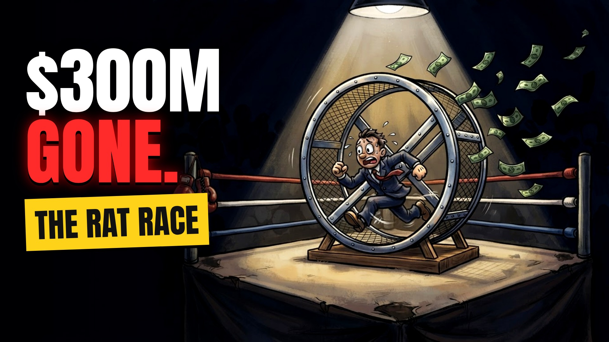

Escaping the Rat Race
Finance with Stromi · video 05 · launch kit for review. Nothing is booked yet.
Full video
Thumbnail

Title options
- 1Escaping the Rat Race: What School Failed to Teach You About Money66 charsRecommended
- 2Mike Tyson Made $300M and Went Broke. School Never Told You Why63 chars
- 3Why Six-Figure Earners Still Live Paycheck to Paycheck54 chars
Description
Mike Tyson earned an estimated $300 million in the ring. In 2003 he filed for bankruptcy owing about $23 million. If the most famous fighter on Earth can go broke, the problem was never how much money comes in. So what is money, really, why do so many six-figure earners live paycheck to paycheck, and what did school never teach us about it? In this animated explainer we follow Jimmy (29, earns $105k, has $11.40 in checking) and Carla (52, earns $48k, has six months of bills saved). We look at what money actually is, why it works like a bathtub, the small leaks that drain it, the real rat race (and the gurus selling a way out), the "ostrich effect" that stops us checking our balance, and a simple five-step plan school skipped. Plus four questions to ask about your own money. ⏱️ CHAPTERS 0:00 $300 Million to Zero 1:11 The Six-Figure Broke 3:04 What Money Really Is 5:14 Money In, Money Out 6:40 The Leak 8:13 The Real Rat Race 10:22 The Ostrich 11:42 The Plan School Skipped 13:45 Your Wallet: Four Questions 💬 Are you more Jimmy or more Carla right now? Tell us in the comments. 🔔 Subscribe to Finance with Stromi for money, explained simply. Jimmy, Carla and the rest of the cast are made-up characters. Mike Tyson's story is real and drawn from public reporting. This channel explains money. It isn't financial advice. Sources: ESPN and Al Jazeera (Tyson bankruptcy, Aug 2003); Federal Reserve Bank of New York Household Debt and Credit Report (Q3 2026); CNBC/SurveyMonkey Your Money survey (Jul 2026); Federal Reserve SHED report (May 2026); Federal Reserve G.19 consumer credit; CareerBuilder survey (2017); Next Gen Personal Finance state tracker. Music by Kevin MacLeod (incompetech.com), licensed under Creative Commons: By Attribution 4.0 License, http://creativecommons.org/licenses/by/4.0/ Tracks: Hidden Agenda, Sneaky Snitch, Investigations, Hep Cats, Thinking Music, Dark Times, Fluffing a Duck, Carefree, Gymnopedie No 1. Sound effects: BigSoundBank.com. #RatRace #PersonalFinance #MikeTyson #MoneyTips #Budgeting
Chapters
0:00$300 Million to Zero1:11The Six-Figure Broke3:04What Money Really Is5:14Money In, Money Out6:40The Leak8:13The Real Rat Race10:22The Ostrich11:42The Plan School Skipped13:45Your Wallet: Four Questions
Tags
Dashed = constant channel tags (always kept). Others are this video's own.
finance with stromi, stock market explained, finance explained, investing for beginners, money news, economy explained, personal finance, 401k, stock market news, animated explainer, rat race, escape the rat race, mike tyson bankruptcy, paycheck to paycheck, financial literacy, what school didn't teach you about money, how to budget, emergency fund, ostrich effect, lifestyle creepPinned first comment
Be honest: if your paycheck stopped today, how many weeks could you last? Jimmy says zero. Carla says 26.